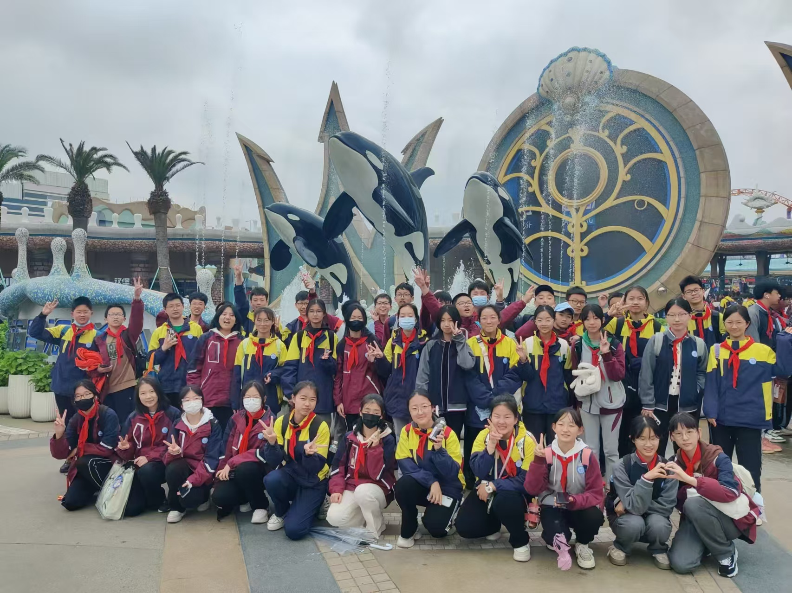
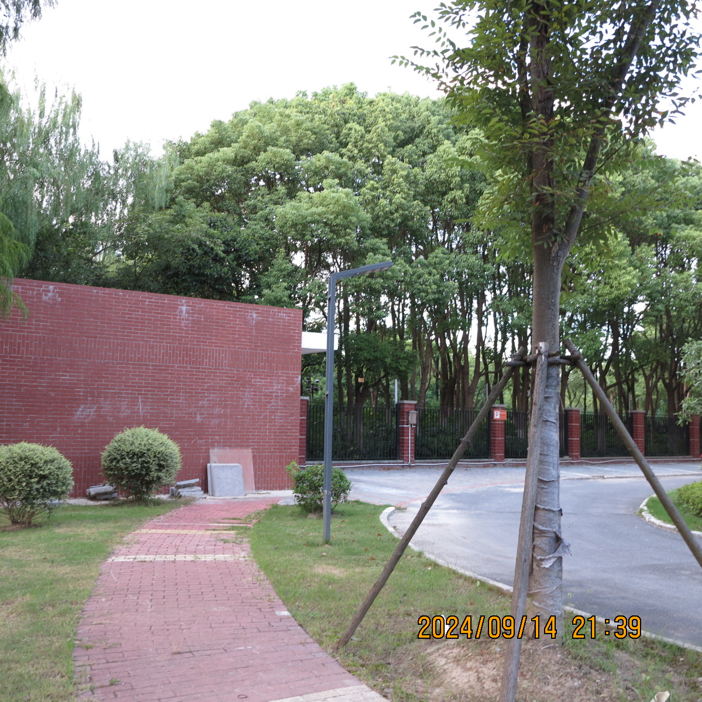

开学季，同学们都准备好了吗？
本报九月十七日十二时电（采访：仲珈仪）。 九月十四日，八二班班委已在班主任丁馨悦老师的安排下，重新选举安排完毕。 本次班委选举根据同学意愿结合考虑，决定延续上一届安排。大体是：
课代表安排情况如下：
语文课代表赵永宣表示，目前语文作业收发大体延续上一届。 数学课代表表示，目前张溢琛暂不参与收作业项目，负责汇总与课前领读。
本报九月十四日十七时电（文字：张溢琛）。 据悉，九月十四日下午，举行了少代会，决定秋季社会实践活动相关事务。 根据八年级二少先队代表张梁瑾萱口述，本次秋游目的地将有同学们自行投票决定。 历届校园秋游会目的地包括：欢乐谷、千古情、海昌海洋公园。同学们均很满意。 对于这次秋游，同学们对其目的地纷纷提出自己的见解。本次八年级二班投票已经结束， 投票结果暂未公布。
本报九月十四日十八时电（执笔：张溢琛）。 我校张梁瑾萱、沈唐宁、黎俊楠三位同学于昨日 上午十一时出发，前往参加上海市人大会议。 会议中，他们主要学习了人民代表大会制度的工作方式， 并就环境绿化方面的工作提出了属于青少年的一份意见 张梁瑾萱代表这三名优秀同学说到：“本次活动给予了我 养成亲社会行为的机会，参政议政，对我们三人都有很大帮助。” 另外，据悉，沈唐宁同学已多次参加相关活动，使得某位 领导都表扬她为“称之无愧的红领巾讲解员，优秀少先队员”。 人民代表大会制度是中国的根本政治制度，是中国人民 民主专政政权的组织形式，是中国的政体，是社会主义上层 建筑的重要组成部分。
本报九月十六日十二时电（采访：夏缕妍、仲珈仪）。